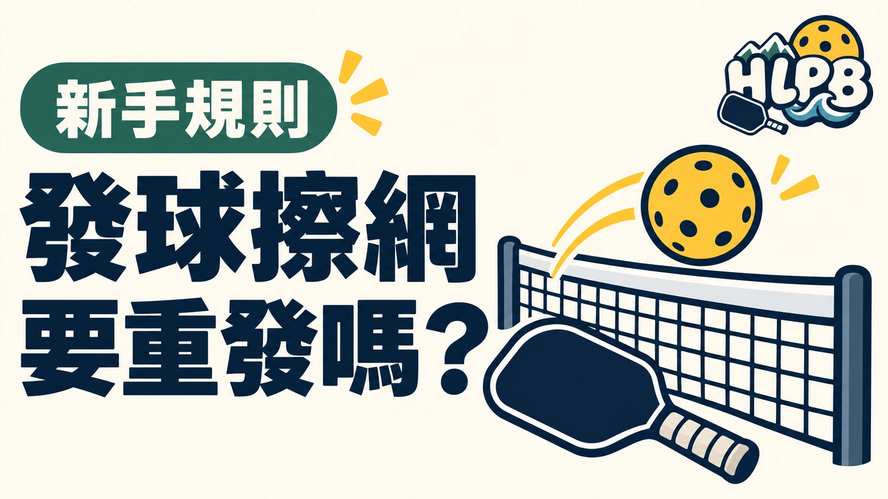

依 2026 USA Pickleball 規則，發球擦網後落在正確的對角發球區，應繼續打，不會只因擦網就重發。
判斷重點是落點。發球仍須越過對方非截擊區，落進正確發球區。
四種結果，分開判斷
| 發球結果 | 判定 |
|---|---|
| 擦網後落進正確對角發球區 | 繼續打 |
| 落在非截擊區或非截擊線 | 發球失誤 |
| 落在錯誤發球區或界外 | 發球失誤 |
| 沒有過網 | 發球失誤 |
擦網後，先別停下來
不要聽到球碰網就停下來。先看球是否落進正確位置。碰網本身並不是這種發球需要重發的理由。
以上整理以 2026 USA Pickleball 規則為依據，參賽前也應確認賽事採用的規則版本與補充規定。
來源：2026 USA Pickleball 官方規則：7.E、8.B、8.C ↗。資料核對：2026/10/14；選購檢查建議由 HLPB 編輯整理。
最後查證：2026-10-14｜資料來源：HLPB 編輯整理與正文所列官方資料
返回文章列表